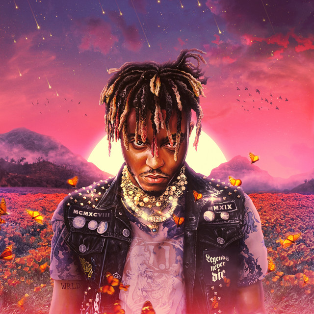

juice Wrld

Wishing Well
«Wishing Well» es una canción del rapero estadounidense Juice Wrld, de su tercer álbum de estudio póstumo Legends Never Die

The light
« The Light » es una canción del rapero estadounidense Juice Wrld . Fue lanzada el 23 de marzo de 2023 por Productions e Interscope Records

No me ame
Es una canción del rapero juice y Anuel AA, el productor jamaicano Rvssian y el rapero y cantante estadounidense Juice Wrld